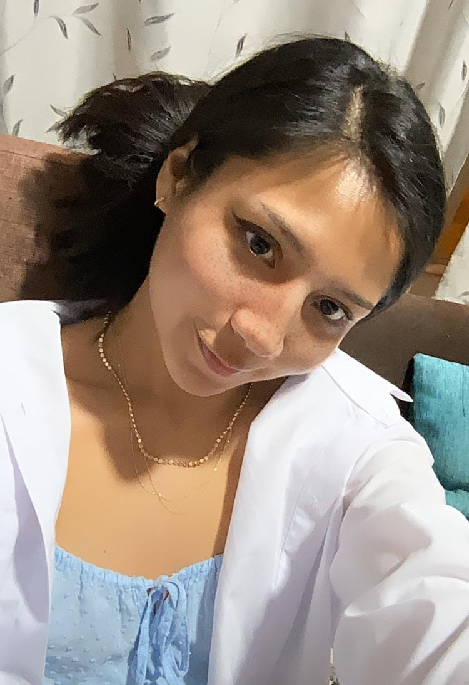
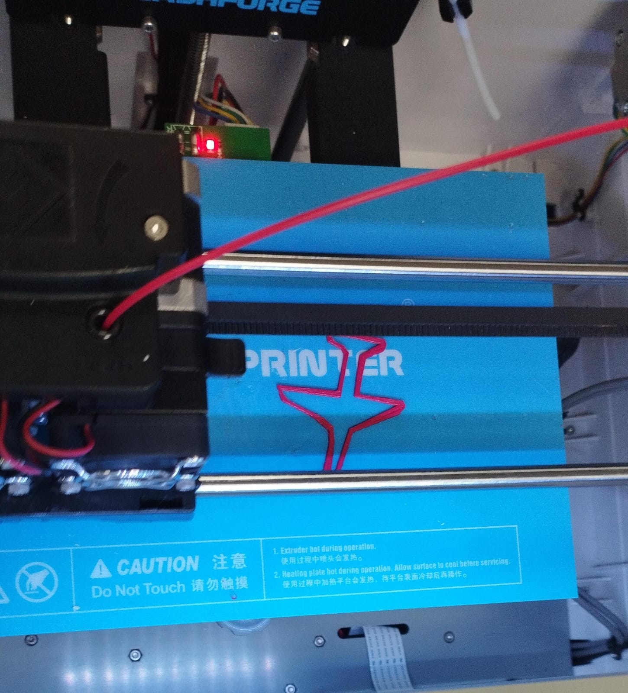
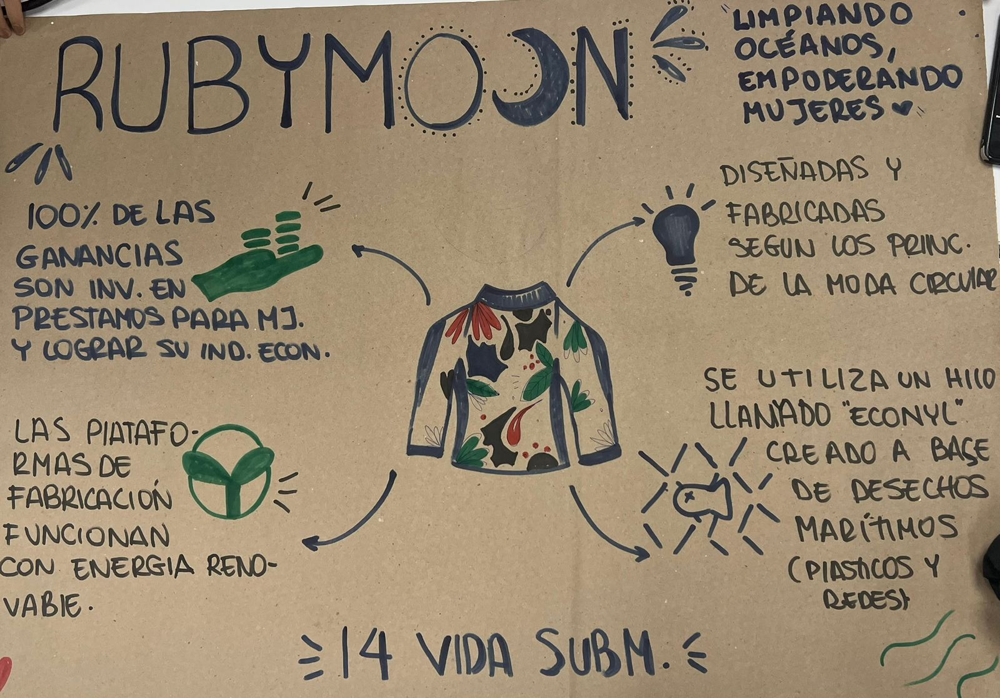
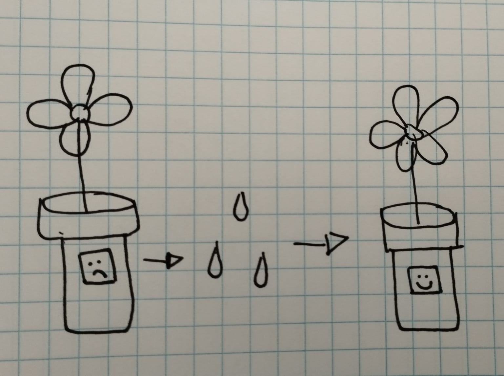

Lucciana Dávila Castello
|  |
Mi nombre es Lucciana Dávila Castello ☀️ Soy estudiante de la carrera de Comunicación Audiovisual multimedia, me considero una persona creativa y siempre con ganas de grabar mi alrededor, encuentro inspiración en los viajes y la naturaleza. Actualmente trabajo en una productora audiovisual pero una de mis metos es abrir mi propia productora y crear contenido con mi propio estilo. |
|  |
Mision 1 ✈️ En la primera semana aprendimos como funciona una impresora 3D y apartir de una lluvia de ideas grupal realizamos un diseño para imprimir. |
|  |
Mision 2 🐟 En la segunda semana en una actividad grupal preparamos un mapa sobre un emprendimiento basado en la ODS 14 "Vida Submarina". También aproveché la clase para imprimir el logo de mi album favorito en 3D. |
|  |
Mision 3 🌼 En la tercera semana individualmente pensamos en una idea de un producto innovador y tecnológico. Mi idea consiste en realizar un macetero que te avise cuando la planta necesita ser regada, esto funcionará con la ayuda de arduinos con sensor de humedad y la maceta estará diseñada e impresa en 3D con un diseño llamativo. |